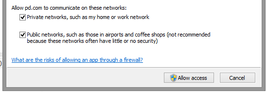

Instalar Pd y AOO.
Conseguir Pd
Pure-Data es software libre (y codigo abierto) y se puede instalar en Windows, macOS y Linux.
Windows:
Descargar Installer for Microsoft Windows, 64 bit executable desde http://puredata.info/downloads/pure-data.
Ejecutar el instalador.
Cuando este listo iniciar Pd.
En el primer inicio el firewall pedira permisos. Permitir accesos en redes Privadas y Publicas.

En el primer inicio Pd le preguntura si quiere crear la carpeta documents/pd. Aceptar.
Ir a pruebas de sonido
Ir a conseguir aoo
macOS:
Descaragar Intel/64bit desde http://puredata.info/downloads/pure-data.
Inicialo.
En el primer inicio Pd le preguntura si quiere crear la carpeta documents/pd. Aceptar.
Ir a pruebas de sonido
Ir a conseguir aoo
Linux:
Descargar Source tarball desde http://puredata.info/downloads/pure-data.
Abra una terminal e instale dependencias:
Tipee:
sudo apt-get install libasound2-dev tcl tk
Cuando termine cierre la terminal.
Descomprima el paquete Pd descargado.
Entre en la carpeta “src”. Abra la terminal en esta carpeta.
Tipee para comenzar la compilacion:
make -f makefile.gnu
Cuando termine hacer cd ../bin
Despues ./pd
En el primer inicio Pd le preguntura si quiere crear la carpeta documents/pd. Aceptar.
Ir a pruebas de sonido
Ir a conseguir aoo
Pruebas de sonido.
Ajuste el volumen de su computadora a un nivel bajo (ud. seguramente esta familiarizado con el o los controles de volumen de su computadora y parlantes) generalmente un botón con forma de parlante cerca del reloj. Aquí algunas imágenes de mac, windows y linux:
Iniciar Pd e ir al menu Media / Test Audio and MIDI...
Aleje los auriculares de sus oídos!!!
Sáquese los audífonos!!!
Aleje los auriculares de sus oídos!!!
Sáquese los audífonos!!!
Aleje los auriculares de sus oídos!!!
Sáquese los audífonos!!!

Presione el botón “80” (en la ventana “testtone.pd”) y suavemente incremente el volumen de su computadora hasta que escuche claramente un tono constante similar al del teléfono antes de marcar. (si usa auriculares acérquelos a sus oídos lentamente hasta su posición normal, insisto, con precaución.)
Seguramente con esta prueba escucho el tono y ya sabe como debe controlar el volumen cuando use vrrl. Puede cerrar la ventana “testtone.pd”.
Ajustes de latencia:
Va a necesitar la latencia mas baja posible en su sistema. Cerca de 8ms es posible en la mayoria de los sistemas.
Ir al menu Media / Audio settings. y cambiar Delay (msec) a 8.
Si tiene mas de una placa de sonido seleccione cual usar con Pd.
Puede checkear si el audio funciona bien llendo de nuevo a Media / Test Audio and MIDI...
para Windows:
Seguramente necesitas usar el driver ASIO. Ir al menu Media / ASIO (via portaudio).
Cambia el delay a 8ms, block size a 64 y selecciona el driver ASIO de tu placa. Preciona el boton "Save All Settings".
Puede checkear si el audio funciona bien llendo de nuevo a Media / Test Audio and MIDI...
Nota: Puede usar http://www.asio4all.org/ con su placa de sonido interna.
En algunas versiones de windows como “Starter” o “Home basic” posiblemente NO ESCUCHE el tono de prueba o encuentre otros inconvenientes. Antes de desistir pruebe iniciar el Pd en el modo “Ejecutar como Administrador”. Para esto haga click-derecho en el icono del programa e inicie con el menu “Ejecutar como Administrador”
Conseguir AOO
Ir al menu Help / Find externals


A: Tipee "aoo".
B: click en el boton "Search".
C: click en la ultima version disponible de AOO.
Selecciona "yes" para instalar con las opciones predeterminadas.